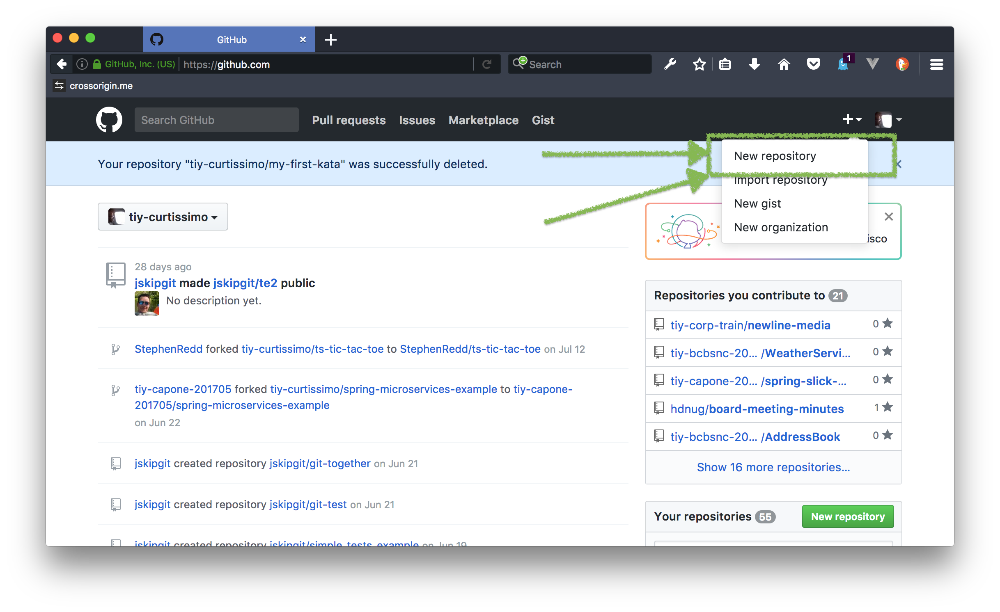
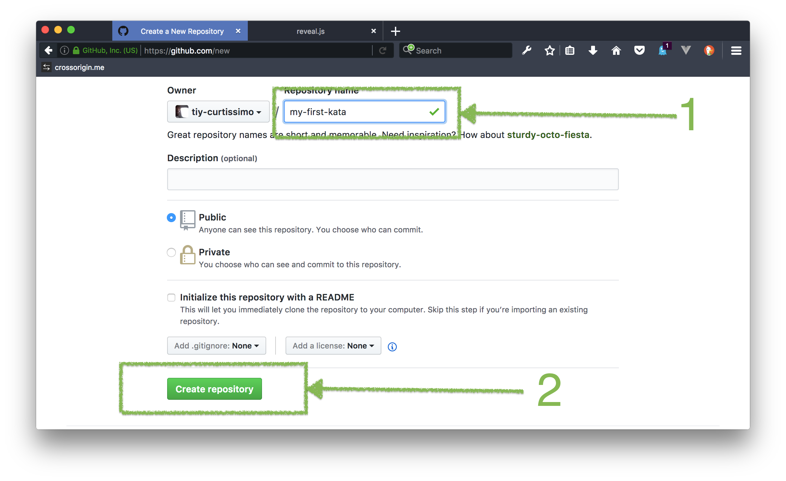
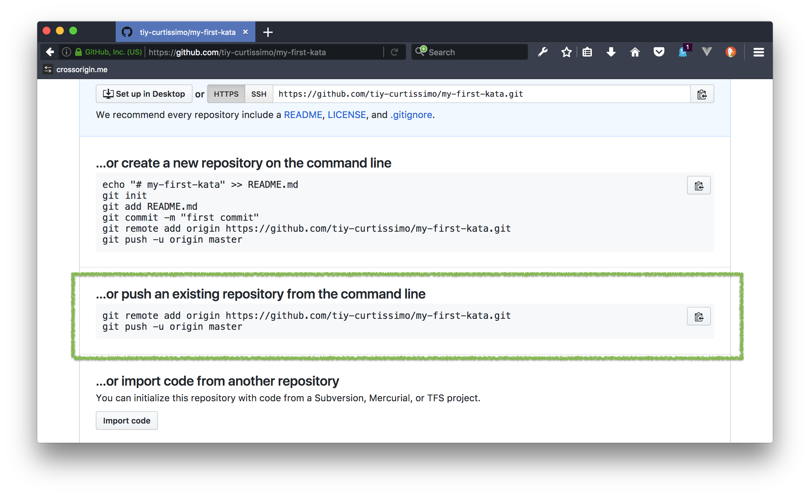

GoForCode!
Back-End with Java
Git Kata
Open a terminal/Git Bash thing
Change your working directory to your dev directory
Make a directory named kata
Change the working directory to kata
Initialize a new Git repository
Create a file named poetry.txt
Put the content of the poem I taste a liquor never brewed in it and save it.
Add/Stage the file for commit
Check the status to make sure you added the file
Commit the file
Check the status that your working tree is clean
Check the log to make sure your commit is there
You did it!
But wait, there's more.
Go to https://github.com
Create a new repository on GitHub
Fill in the name only
Follow the instructions for …or push an existing repository from the command line
